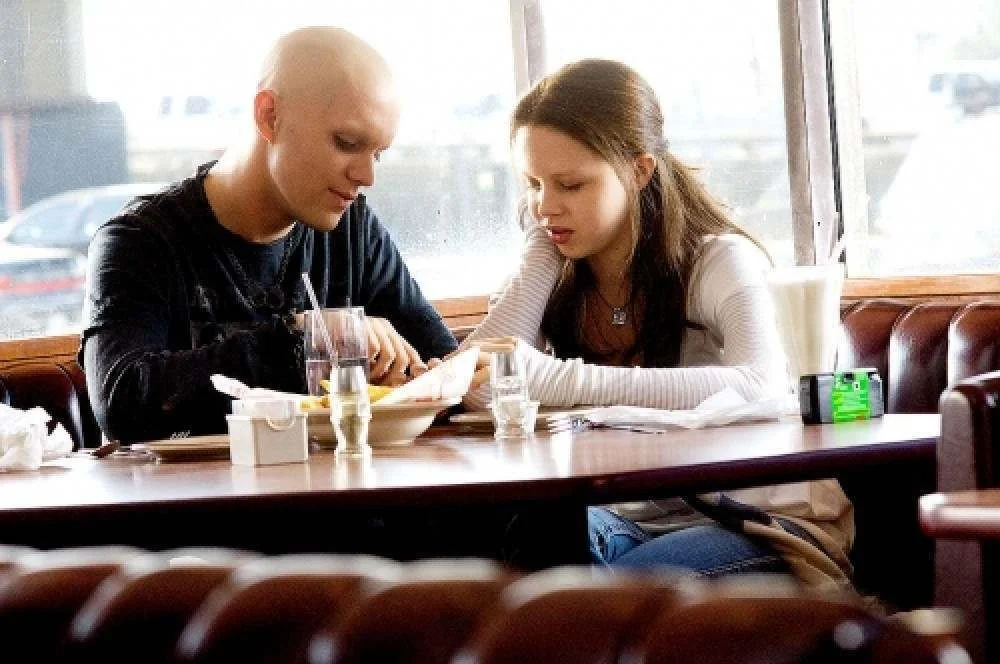

Me chamo Sarah, tenho 16 anos.
Vivo a música, ela faz parte de mim desde que me entendo por gente, gosto de estar no meu quarto, e de cantar.
Meu filme favorito é My sister's Keeper (uma prova de amor) onde, Anna Fitzgerald foi concebida para ajudar a salvar sua irmã doente. Em seu pouco tempo de vida, já passou por várias cirurgias na tentativa de curá-la. Porém, ela leva seus pais ao tribunal, pois quer ser emancipada.
